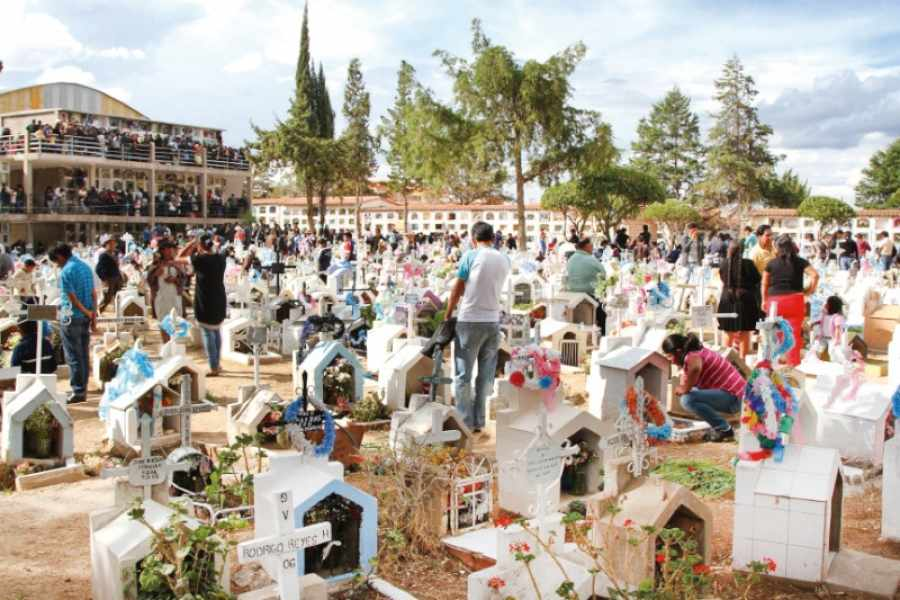
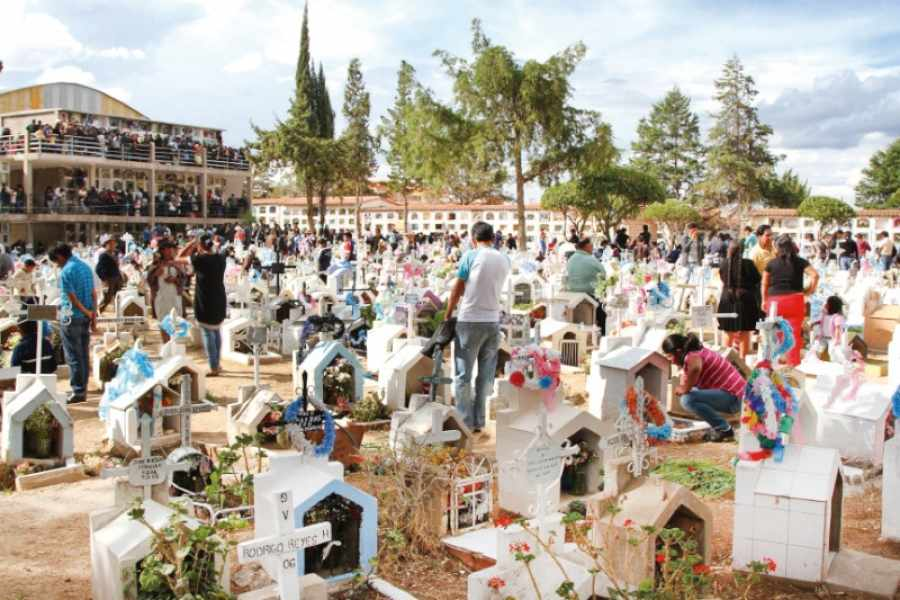

Cada año, al inicio de noviembre, retornan las almas o ajayus de nuestros seres queridos que ya fallecieron. A ellos se los espera con los altares armados de los difuntos conocidos como apxatas, que incluyen alimentos, bebidas y sobre todo a las tantawawas, elementos que tienen un especial significado en la festividad de Todos Santos en Bolivia. Los amautas o sabios aymaras mencionan una y otra vez que “venimos de un Wiñay Marka (Pueblo eterno) y volveremos a ese Wiñay Marka por lo tanto, no existe la muerte sólo volvemos a nuestro pueblo”.
El ajayu también se diferencia entre el “jisk’a” (pequeño o menor) y el jach’a (grande o mayor) ajayu. El menor se describe como la energía que algunos pierden poco a poco en vida, ante el desequilibrio de sus energías positivas y negativas. En cambio el mayor, es la energía vital, ésta se pierde con la “muerte” de un ser, pero la energía es trascendente y permanece en otra dimensión, menciona el amauta Manuel Alvarado en su reciente obra: Cómo superar el miedo con el ajayu.El culto a los difuntos en los Andes se remonta a épocas prehispánicas cuando la muerte era concebida de otra manera para los pueblos y civilizaciones que desarrollaron el arte y la ciencia como los tiwanacotas y los incas.
Para los pueblos aymaras la muerte natural no constituye un episodio trágico, sino un ciclo más de la propia vida. Por eso, cuando alguien fallece, se suele decir que esa persona “se ha ido” o “ha partido”. Entre las tradiciones que aún se mantienen se cree que los ajayus vienen para traer fecundidad y fertilidad para todo el año, porque en noviembre también se inicia la época de la siembra en los campos agrícolas del altiplano.

 
